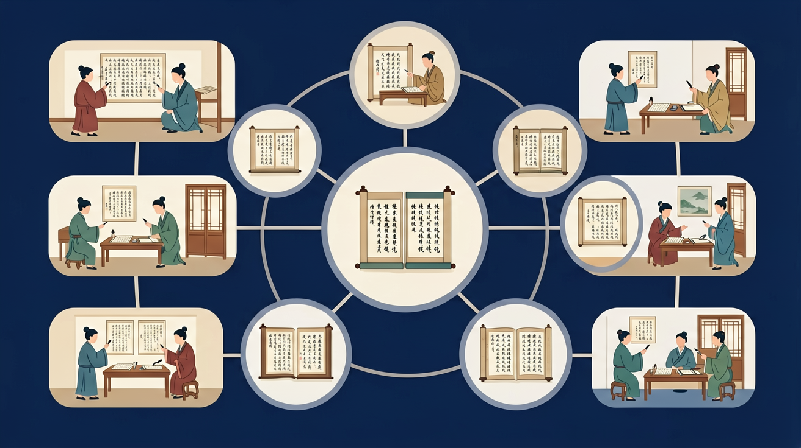

🌍 And（已知）：我们已经学过一些古诗
⚡ But（问题）：但古诗语言简洁，含义深刻，读起来常常似懂非懂
💡 Therefore（新知）：因此我们深入学习诗歌鉴赏，感受语言的韵律美和意境美
四年级语文 · 品味古诗，感悟意境，赏析技法

回忆：今天学了哪些关键词和规则？试着说出来。
用自己的话解释今天学的核心概念，不看书能说清楚吗？
用今天的知识解决一个实际问题，或写一个新例子。
把今天的知识与已有知识联系起来：有什么共同点？有什么区别？能不能自己创造一道新题？
古诗是中国古代诗歌的简称，主要指唐代及以前的诗歌作品。古诗通常具有固定的格律和韵律，语言精炼，意境深远。例如李白的《静夜思》：'床前明月光，疑是地上霜。举头望明月，低头思故乡。'这首诗只有20个字，却生动地描绘了游子思乡的情感。古诗与现代诗不同，它有严格的字数和平仄要求，如五言绝句每句5个字，共4句。通过学习古诗，我们可以了解古代文化，感受汉语的韵律美。
古诗按内容可分为山水田园诗、边塞诗、送别诗、咏物诗等。山水田园诗描写自然风光和田园生活，如王维的《山居秋暝》；边塞诗反映边疆战争和军旅生活，如王昌龄的《出塞》；送别诗表达离别之情，如王维的《送元二使安西》；咏物诗通过描写物品寄托情感，如贺知章的《咏柳》。按形式可分为古体诗和近体诗，古体诗格律较自由，如《诗经》中的作品；近体诗格律严格，如杜甫的律诗。了解分类有助于我们更好地理解古诗的主题和情感。
意象是古诗中用来表达情感的具体形象。常见的意象有月亮（思乡）、杨柳（离别）、菊花（隐逸）、鸿雁（书信）等。例如杜甫《月夜忆舍弟》中'露从今夜白，月是故乡明'，用月亮表达对家乡的思念；王维《送元二使安西》中'渭城朝雨浥轻尘，客舍青青柳色新'，用杨柳烘托离别氛围。诗人通过意象的叠加营造意境，如马致远《天净沙·秋思》中'枯藤老树昏鸦，小桥流水人家'，多个意象组合出一幅凄凉的秋景图。理解意象是鉴赏古诗的重要环节。
古诗常用比喻、拟人、夸张、对比等表现手法。比喻如李白《望庐山瀑布》'飞流直下三千尺，疑是银河落九天'，将瀑布比作银河；拟人如杜甫《春望》'感时花溅泪，恨别鸟惊心'，赋予花鸟人的情感；夸张如李白《秋浦歌》'白发三千丈，缘愁似个长'，极言愁绪之深；对比如杜甫《自京赴奉先县咏怀五百字》'朱门酒肉臭，路有冻死骨'，展现社会不公。这些手法使诗歌形象生动，增强感染力。学习时要注意辨别手法并分析其效果。
先独立作答，再点选项查看对错与错因。
《静夜思》中'床前明月光'主要运用什么手法？
下列哪项最能体现《春晓》的情感特点？
比较两首诗，正确的是：
《静夜思》中诗人看到____想起故乡
答案：明月
关键意象触发思乡情
《春晓》'花落知多少'通过____的变化表达情感
答案：自然景物
借景抒情典型手法
古诗中'意象'指什么？
选择两首描写季节的古诗，比较其意象运用